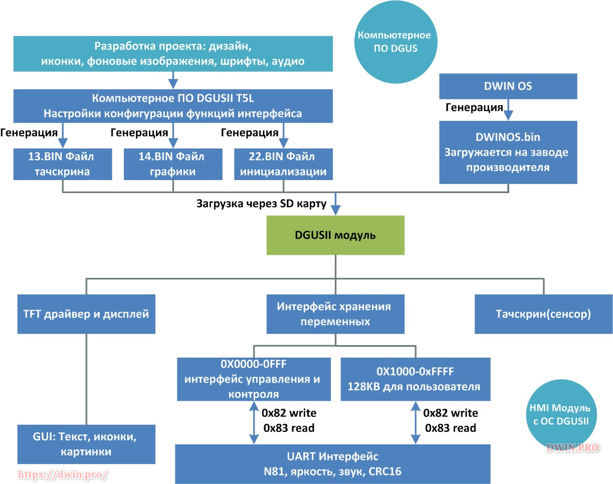
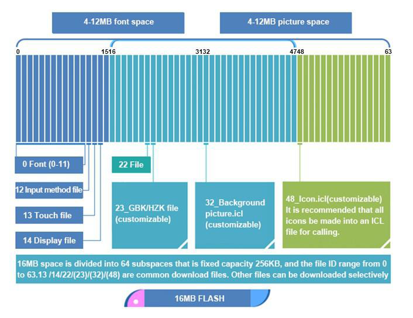
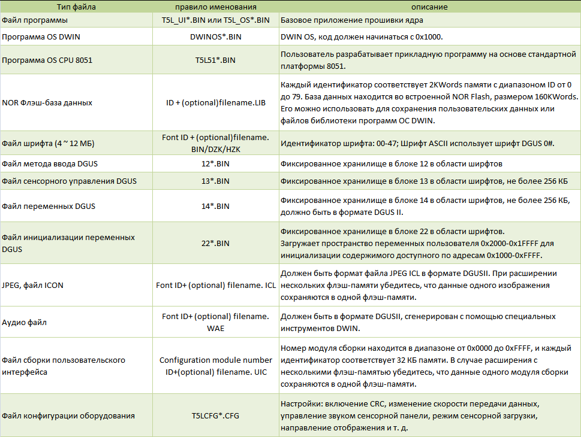
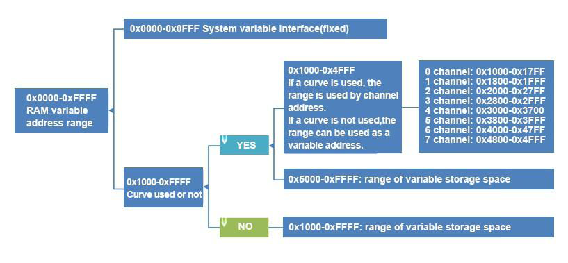

Начало разработки #2: архитектура
#1: загрузка прошивки
#2: архитектура
#3: среда ПО DGUS
#4: команды и протокол serial порта
Как там всё устроено: архитектура, структура прошивок, память flash, RAM
Предполагается что вы ознакомились с предыдущими статьями данного цикла статей.
А также имеете базовые знания о микроконтроллерах или компьютерном программировании, а также о двоичных и шестнадцатеричных числовых представлениях.
Общее описание процесса
В программе DGUS для ПК создаётся проект.
Проект логически можно разделить на четыре части по типу контента:
Настройки конфигурации.
Статическая.
Динамическая.
Статически-динамическая.
1. Файл конфигурации позволяет указать параметры работы модуля и периферии в соответствии с требованиями проекта: скорость serial порта, яркость экрана, режим сна, режим звука, громкость, CRC и др.
Файл: T5LCFG.CFG
2. Статическая часть это файлы которые не изменяются в процессе работы: фоновые изображения, шрифты, иконки(маленькие картинки), звуки/музыка и др.
Это всё загружается в под-программу DGUS, там она сжимает и конвертирует все эти исходные файлы в бинарные файлы для прошивки.
Получается что все фоны хранятся в одном файле(32.icl).
Вся музыка/звуки в другом файл(16.wae).
Иконоки в третьем файле(48.icl).
Шрифты в четвертом файле.
При упаковке каждому исходному файлу присваивается номер/ID. Чтобы в дальнейшем обращаться к исходному файлу по этому ID.
Файлы: .icl, .wae, .hzk
3. Динамическая часть контента формируется за счёт переменных.
В программе DGUS указываются переменные из которых берется информация для отображения на дисплее. Файл: 22.bin
4. Статически-динамическая часть содержит числовые описания статических элементов в переменных: размер, положение и т.п. Это позволяет скрывать-показать, перемещать/вращать и совершать другие примитивные действия со статическими элементами.
Файлы: 13.bin, 14.bin
Из 3 и 4 легко заметить что визуальные изменения происходят через переменные в RAM/ОЗУ памяти.
Это значит что RAM является интерфейсом работы с переменными + с OS_DGUS.

В RAM интерфейсе можно отметить два направления работы:
Оба направления имеют стандартные команды: чтение/запись байт в/из RAM.
В работе с переменными всё сравнительно просто. Можно читать и менять значения переменных.
А в работе с функциями os_dgus всё немного иначе.
Работа с функциями OS_DGUS
После команды записи в RAM, OS_DGUS проверяет "триггерные" адреса памяти. Если там установлен байт(который установили мы), то OS_DGUS начинает выполнять инструкцию/операцию/функцию соответствующую адресу памяти. По завершению операции ОС сбрасывает установленный нами триггерный байт.
Некоторые функции не сбрасывают триггерный байт, например функция "отобразить_иконку".

Стандартно флеш имеет объем 16 МБ и разделена на 64 блока по 256 КБ.
Блоки имеют нумерацию/ID от 0 до 63 и соответствуют числу-указателю в названии файлов: 0.hzk, 13.bin, 22.bin, 32.icl...
То есть число в названии файла это указатель на блок. Указывает на N-ый блок из 63, в который начнётся запись. Если файл не умещается в один блок, то запишется в следующий и так далее.
Логически память разделена ещё на 2 части, в соответствии с типами хранимого содержимого:
Обеим частям предполагается не фиксированный объём по 4-12 МБ.
Размер одного исходного файла(изображения) для файла .ICL должен быть
< 252КБ - для модуля с ЦП T5L1,
< 764КБ - для модуля с ЦП T5L2 .
Важно
Нумерация указателей на блоки в названии файлов всегда должна учитывать размер самих файлов.
Если это не учитывать, то при записи может произойти наслоение одних файлов на другие. Это вызовет аномалии в работе.
Нюанс
В память загружаются только файлы находящиеся на SD карте, а пустые области не стираются.
Значит при каждой загрузке, на карте должны быть только файлы, которые были нами изменены. Чтобы уже записанные файлы не отнимали наше время при следующих загрузках, и не снижали ресурс флеш памяти.
Самые часто меняющиеся файлы при отладке *.bin.
Назначение файлов
13.bin - содержит информацию о областях при нажатии в которые должно что-то произойти: например изменить переменную из 22.bin. Условно файл для тачскрина.
14.bin - содержит информацию о областях элементов которые отображаются на экране: переменные, графики, иконки, дата-время и др.
22.bin - переменные которые выводятся в элементах из файла 14.bin
32.icl - фоновые изображения страниц/слайдов.
48.icl - иконки(маленькие картинки).
16.wae/40.wae - мелодии/музыка/звуки.
В следующей таблице описаны типы файлов и правила именования, принимаемые платформой DGUSII.


Физически пользователю доступно RAM/ОЗУ 128 КБ.
Однако она разделена на блоки по 2 байта = 1 слово.
В итоге имеем адресное пространство в диапазоне 0x0000-0xFFFF.
Системные переменные занимают адреса: 0x0000-0x0FFF - 8 КБ.
Для рисования графиков/кривых-curves задействованы адреса: 0x1000-0x4FFF ~ 32 КБ.
Соответственно,
если графики используются, то пользователю доступны адреса: 0x5000-0xFFFF ~ 88 КБ,
если графики не используются, то пользователю доступно больше: 0x1000-0xFFFF ~ 120 КБ.
Акцентирую:
по каждому адресу находится ячейка размером 1 слово-word = 2 байта = 16 бит.
Пользователю данная память предоставлена для хранения:
Поздравляю с завершением этой части. Если что-то было не понятно - рекомендую перечитать эту часть через некоторое время.
Следующая часть о создании своего дизайна в ПО DGUSII.